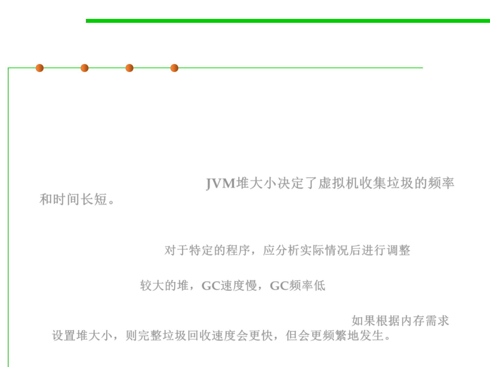

8.1 Metrics, Principles, and Methods of Construction for Performance
(1) Tuning VM Heap Size
▪ The Java heap is where the objects of a Java program live. It is a
repository for live objects, dead objects, and free memory.
– When an object can no longer be reached from any pointer in the running
program, it is considered "garbage" and ready for collection.
▪ The JVM heap size determines how often and how long the VM
spends collecting garbage. JVM堆大小决定了虚拟机收集垃圾的频率
和时间长短。
– An acceptable rate for garbage collection is application-specific and
should be adjusted after analyzing the actual time and frequency of
garbage collections. 对于特定的程序，应分析实际情况后进行调整
– If you set a large heap size, full garbage collection is slower, but it occurs
less frequently. 较大的堆，GC速度慢，GC频率低
– If you set your heap size in accordance with your memory needs, full
garbage collection is faster, but occurs more frequently.如果根据内存需求
设置堆大小，则完整垃圾回收速度会更快，但会更频繁地发生。